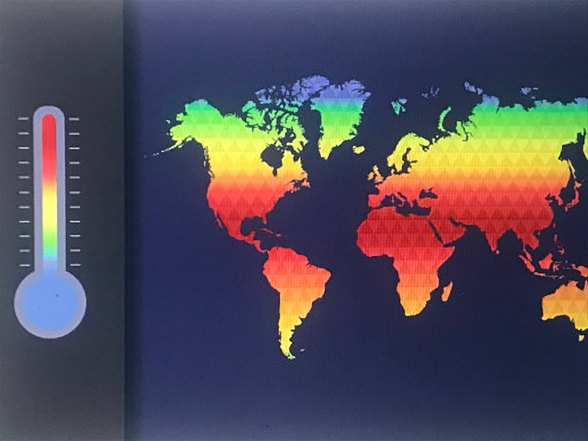

This is an end-to-end project where I conducted a comprehensive analysis of customers,employees and products performances, focusing on key metrics such as count of workers, top products,top customers and so on,and their overall impact of operations on the organization.This is a combination of three skill and tools to derive this visualization and insights..
.

This project analyzes climate data using Power BI. The dataset includes temperature, precipitation, humidity, wind speed, and other weather-related parameters recorded over time. The goal is to create insightful visualizations to identify trends and patterns in the climate data...
This Power BI dashboard provides an interactive visualization of the Tuberculosis (TB) burden across different countries and regions over multiple years. The dataset includes key metrics such as TB prevalence, incidence, mortality, and case detection rates, helping users analyze global trends and regional disparities..

I automated a company’s loan process by using machine learning models to determine loan approval based on customer details provided. .

The project aims to assist a jewelery company called Gemineye Emporium to predict prices to optimize their production while using supervised machine learning algorithms.

Scenario:This project involves a churn detection system using supervised learning techniques to identify players likely to churn. The project establishes a baseline model addressing player attrition challenges in the gaming industry, offering insights into user behavior and helping improve retention strategies.

This project involved developing a machine learning model to predict burned areas using environmental data such as rainfall, temperature, and land cover. The model analyzed fire dynamics to provide insights for fire management and the potential impacts of climate change wildfire occurrences.

Real-world data rarely comes clean. Using Python and its libraries, I analyzed used car sales data from eBay to uncover insights like price trends, popular car models, and factors influencing resale values. The analysis highlights key metrics for buyers and sellers, bringing data-driven transparency to the online car marketplace.

In this project, I gathered data on layoffs in popular companies in the world and cleaned the dataset in MYSQL Server.
Performed Data Exploration of the layoffs data in My SQL. I gathered data on layoffs in popular companies in the world and cleaned the dataset in MYSQL server after which i began exploration to uncover some interesting insights.

This contains all my Power Bi Dashboards and Projects to showcase my documentation, visualization, reporting, communication, and presentation skills.